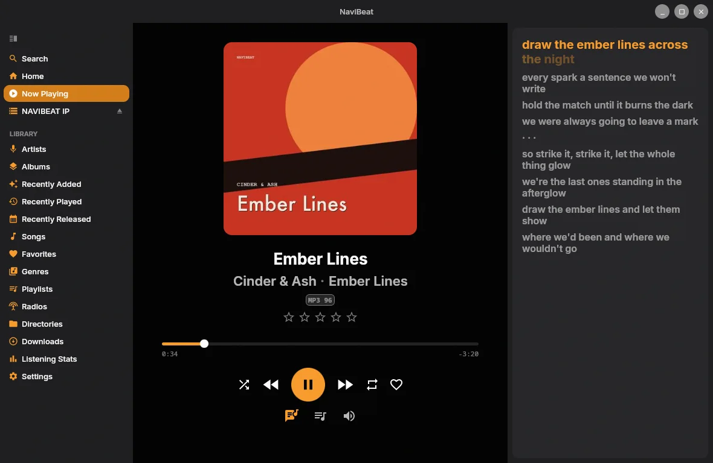
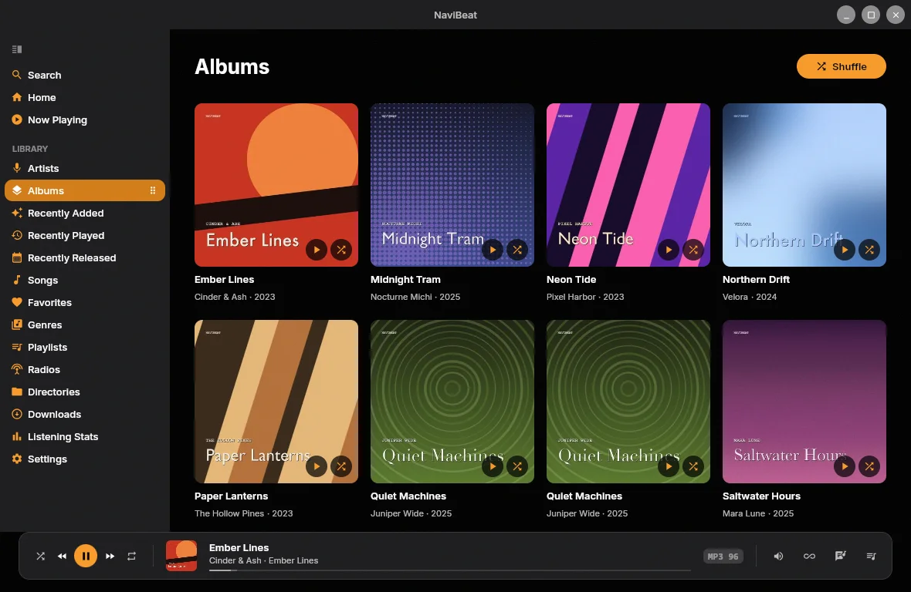
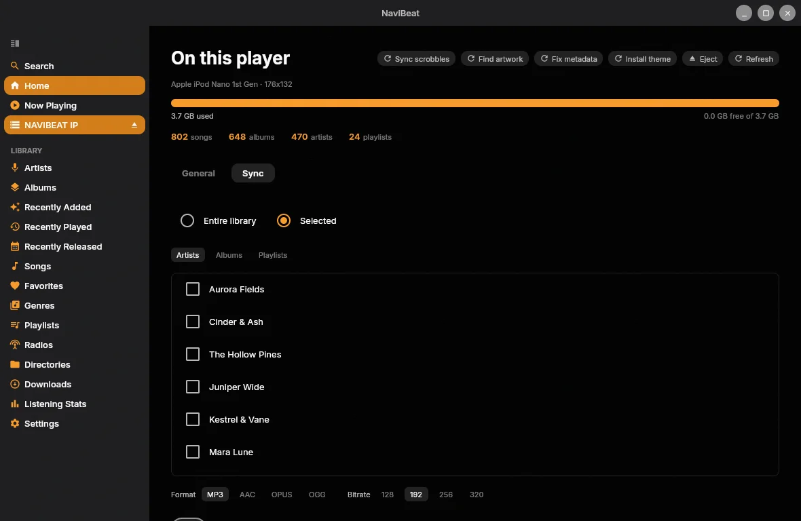
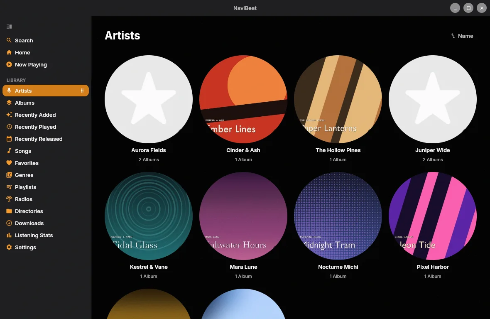

A desktop music player for Navidrome, Airsonic, Gonic, or any OpenSubsonic server. Time-synced lyrics, a Mini Player that stays on top, downloads for offline, a 10-band equalizer, casting to the speakers on your network, and Rockbox sync. Use every feature free for five days. After that it's $9.99, once. No in-app purchases: one price covers everything, Library Doctor and NaviSyncRock included.
Rather not install anything? Get the portable zip, unpack it anywhere and run NaviBeat.exe.
If Windows shows Windows protected your PC, click More info, then Run anyway. Why it asks.
A sidebar, keyboard control and directory browsing. The Mini Player can stay on top of whatever you're doing. On Windows 10 (1803 and later) and Windows 11 the sidebar is frosted glass, and your desktop shows through it, blurred.
02 / Audio
EQ, ReplayGain, crossfade.
A 10-band equalizer. ReplayGain, so a shuffle across a mixed library stays at one loudness. Crossfade between tracks.
03 / Play it somewhere else
Send it to the speaker in the other room.
NaviBeat finds the UPnP and DLNA renderers on your network by itself, with no address to type: a network receiver, a streamer, a soundbar, a smart TV. Your queue goes with it.
04 / New: Library Doctor
Find what's wrong with your tags.
Library Doctor reads your library and lists albums that split in two, duplicate imports, compilations that aren't marked as one, missing or doubled track numbers, missing covers and damaged tag text. Point it at the folder that holds your music and it fixes them in the files, after you review each change, and Write History can undo any of it.
05 / Rockbox iPod sync
NaviSyncRock: your Navidrome, on a real iPod.
Plug in a Rockbox iPod or player and send it a song, album, artist or playlist. Your own server does the transcoding, and NaviBeat copies the result across. See how it works.
06 / Homelab access
It reaches the server you built.
When you add your server you can set custom HTTP headers and import an mTLS client certificate (a .p12 file). Your music comes straight from your server, with no relay of ours in between.
Every screen
A desktop app that behaves like one.
Sidebar navigation, keyboard control, a Mini Player, downloads that keep playing when you go offline. These screenshots come from the Linux build, which shares its code with Windows, and use a demo library.
01 / Home
Sidebar, Featured Album, Quick Play.
The sidebar gives you Home, Artists, Albums, Playlists, Radio and Directories. Home opens on a Featured Album hero with Quick Play, Made for You and Most Played below.

02 / Now Playing & Lyrics
Time-synced lyrics, right beside the art.
Open the lyrics panel next to Now Playing and each line lights up as it's sung. Album art, ratings and full transport controls sit alongside.

03 / Albums
Your whole library at a glance.
An Albums grid with cover art, artist name and release year. Sort by recently added, alphabetically, by artist, or by year. Click any album for the full track list, and keep control from the now-playing bar.

04 / NaviSyncRock
Sync to a Rockbox player.
Pick your whole library or just some artists, albums and playlists, choose a format and bitrate, and NaviBeat transcodes on your server and copies it to a connected Rockbox iPod or player.

05 / Artists
Every artist, with their art.
Browse artists as circular tiles with their images and album counts. Open one for the full discography.
Checkout is run by Lemon Squeezy. They're the merchant of record, so they handle VAT and send your receipt. Your license key arrives by email. Paste it into Settings and you're done. To move it to another computer, click Release This Computer on the old one.
The installer isn't code-signed, so Windows shows Windows protected your PC the first time. Click More info, then Run anyway.
Questions
Frequently asked questions
How much does NaviBeat for Windows cost?
$9.99, once. There's no subscription and no in-app purchases: one price covers everything, Library Doctor and NaviSyncRock included. You get five days with every feature first, and after that the app asks for a license key.
How many computers can I use it on?
One key activates up to three computers. To move it, open Settings on the old one and click Release This Computer, then enter the key on the new one.
Windows says "Windows protected your PC". What do I do?
That's SmartScreen. It shows "Unknown publisher" for an installer it hasn't seen signed. Click More info, then Run anyway.
Do I need to install Java or VLC?
No. Both are inside the installer and the portable zip. Your settings live in %APPDATA%\NaviBeat and your downloads in %LOCALAPPDATA%\NaviBeat.
How do I pay, and where does the key come from?
Checkout is run by Lemon Squeezy. They're the merchant of record, so they handle VAT and send the receipt. The license key arrives by email right after you pay.
What music server does it need?
NaviBeat is a client, so it connects to your own server. It works with Navidrome v0.50 or later, or any OpenSubsonic-compatible server, including Airsonic-Advanced and Gonic. It doesn't host or stream any music of its own.